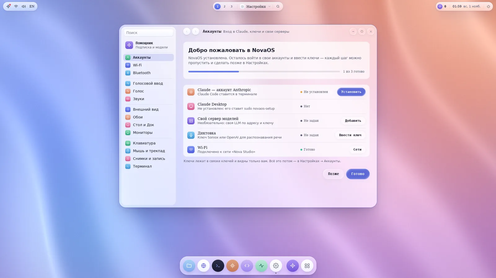
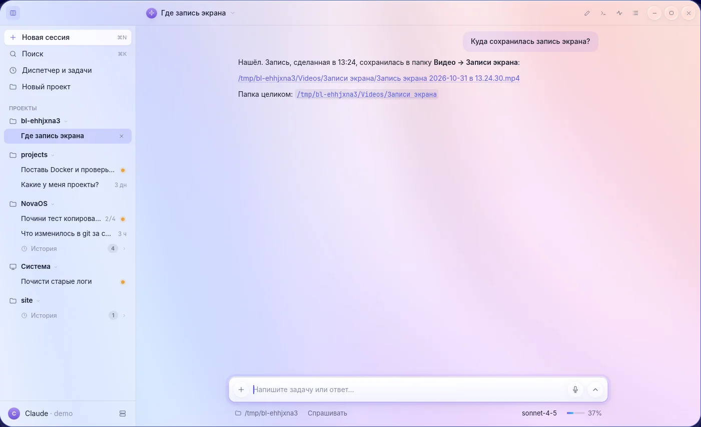
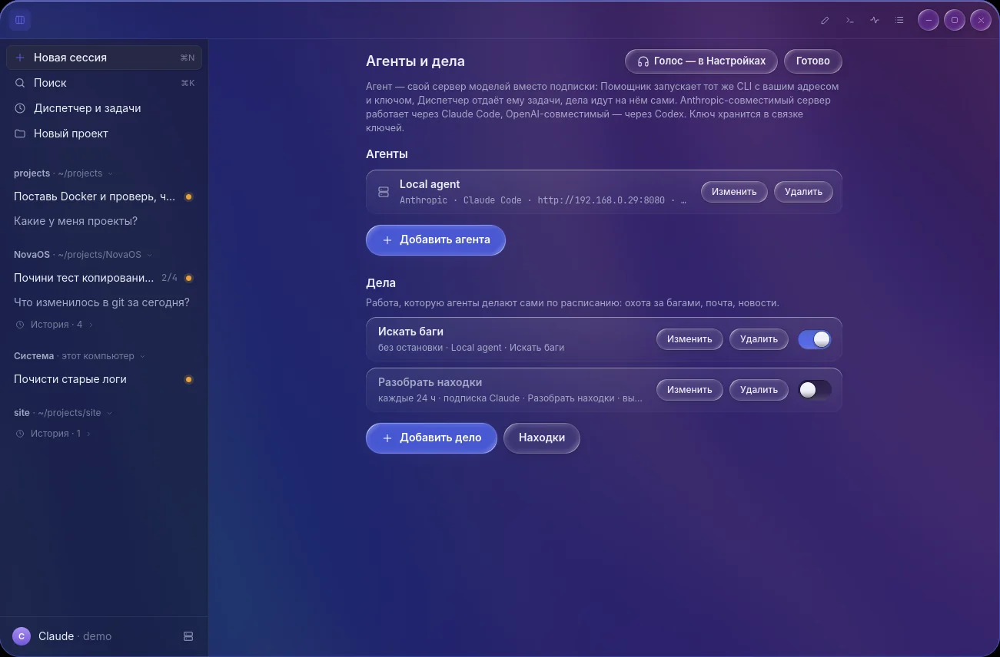
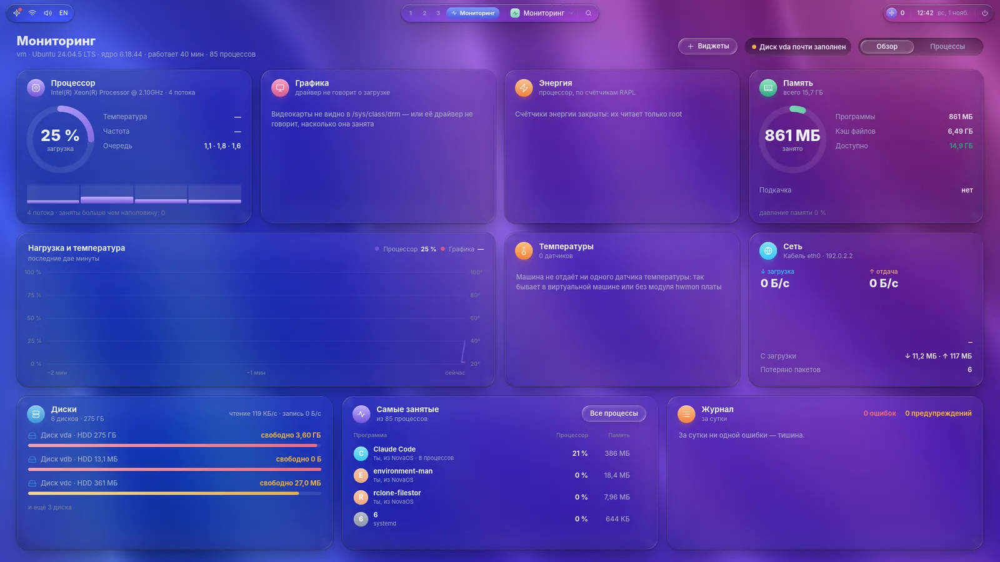
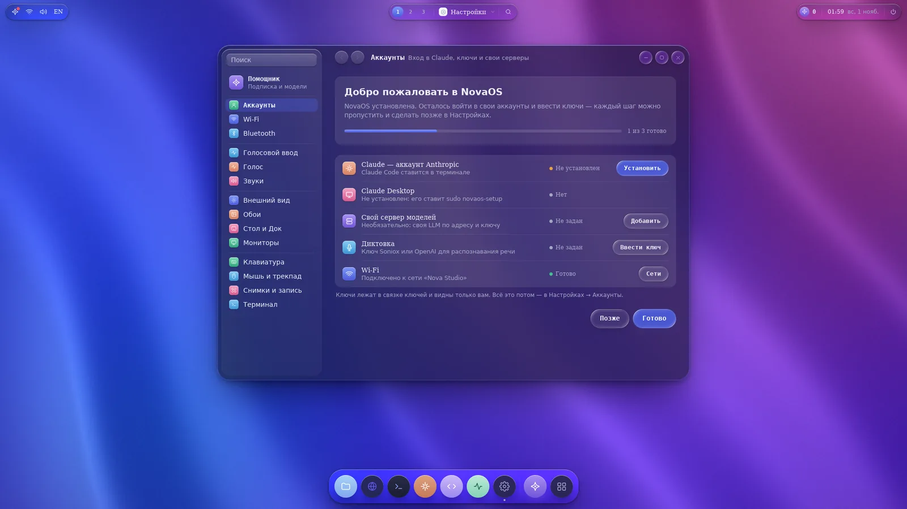

Voice
Dictation into any field, answers read aloud and hands-free conversation with the assistant.
Ubuntu, run by AI. Your agent sees and does what you do.
An assistant on your own Claude Code or Codex subscription writes code and runs the system. Its own Wayland compositor in Rust, frosted glass and nothing wasted in the background.
This is the first beta: some things may not work yet. Tell us what broke

Chat with projects and history. The work is done by your agent's official CLI, so your subscription works as it is.

Every root command from an agent goes through a password window that shows it in full. polkit checks the password, and user processes never see it.

A Dock and Quick Look like macOS, window snapping like Windows. Every mouse action is a command an agent can call with the same result.

Dictation into any field, answers read aloud and hands-free conversation with the assistant.
CPU, memory, disks, network and the busiest programs on one screen and in desktop widgets.
Tabs on ⌘T that drag between windows, with clickable links and paths.
A frame is drawn only when something changes, and on vblank. An idle desktop sleeps.
The compositor comes back by itself, and programs and terminals stay where they were.
Chrome, Claude Desktop, Steam with game mode, Wine and X11 through Xwayland.
Navision runs on an Ubuntu server without a graphics card, and your Mac draws the whole interface. The Dock, windows, menus and animations respond instantly, even over the network: the server sends only what changed.

CI builds both downloads from changes that passed every check.
One command in a terminal. The installer sets up packages, the NVIDIA driver if you need it, services and sign-in. All that is left is to sign in and enter your keys.
$ curl -fsSL https://github.com/snemesh/navision/releases/download/latest-main/install.sh | sh
sh install.sh --file novaos-x86_64.tar.gzWhat the installer does and how to remove it: details
Open the dmg and drag Remote Navision to Applications. The build is not notarized, so the first time open it with a right-click and Open.
nova-remote, passwordless SSH key sign-in and UDP ports 60100–60199 open.xattr -dr com.apple.quarantine "/Applications/Remote Navision.app"How to connect to a server: details